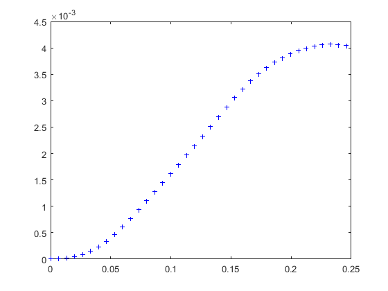

Transient dynamic analysis of simply-supported thin square plate
Contents
Link to the m-file.
Description
Transient vibration problem is solved for a homogeneous simply-supported square plate. This is a test recommended by the National Agency for Finite Element Methods and Standards (U.K.): Test 13T from NAFEMS “Selected Benchmarks for Forced Vibration,” R0016, March 1993.
The plate is loaded by suddenly-applied uniformly distributed traction on the top surface.
The reference solution for the displacement of the center of the plate is 3.523mm at the time instant t=0.210sec.
The plate is discretized with solid elements. Note that some elements would not work very well when their mass matrix cannot be diagonalized to an acceptable degree of accuracy. For example, 20 node hexahedra and 10 node tetrahedra would lead to sub optimal solutions.
Solution
function pub_13TNAFEMS_transient
Define the material properties.
pu=physical_units_struct;
% Parameters:
E = 200e3*pu.MEGA*pu.PA;
nu = 0.3;
rho= 8000*pu.KG/pu.M^3;
Dimensions of the plate: this is for a one quarter of the entire plate.
L =5*pu.M;% half of the span of the plate t =0.05*pu.M;% thickness of the plate
Traction load.
Trac =100*pu.NT/pu.M^2;
Specification of damping: it is based on the value of the damping ratio at one particular frequency.
zeta= 0.02;% [2% of critical damping in the dominant first mode with analytical frequency value 2.377 (Hz) or 14.935 (sec–1)]. omega= 14.935*pu.HZ;% Damping ratio known at this frequency Rayleigh_stiffness = zeta/omega; Rayleigh_mass = zeta*omega;
The chosen mesh parameters. For the number of layers through the thickness of the plate less than 2, the deflection is much too large.
nL= 4;% number of elements span wise nt = 2;% number of elements through the thickness
Geometrical tolerance for searching
tol=t/nt/1000;
The end-time is 0.45 seconds in the benchmark, but if were interested only in the peak value of displacement after the first swing, 0.25 seconds is enough.
tend= 0.25*pu.SEC; graphics=false; igraphics=(1:1500:40000000); plots = true;
The mesh is generated
[fens,fes] = H8_block(L,L,t,nL,nL,nt);;
We are ready to bundle up the model data so they can be passed to the solver.
clear model_data model_data.fens =fens;% the finite element node set
Note that we are specifying the finite element model machine directly. The selected element is high-performance stabilized mean-strain hexahedron.
clear region prop = property_deformation_linear_iso (struct('E',E,'nu',nu,'rho',rho)); region.femm= femm_deformation_linear_h8msgso(... struct ('material',material_deformation_linear_triax(struct('property',prop)),... 'fes',fes, ... 'integration_rule',gauss_rule(struct('dim',3,'order',2)))); model_data.region{1} =region;
The essential boundary conditions implement the two symmetry planes and the zero displacement transversely to the plate at the faces on the circumference to implement the simple support.
clear essential essential.component= [1]; essential.fixed_value= 0; essential.node_list = fenode_select(fens,struct('box',[0 0 0 L 0 t],'inflate',tol)); model_data.boundary_conditions.essential{1} = essential; clear essential essential.component= [2]; essential.fixed_value= 0; essential.node_list = fenode_select(fens,struct('box',[0 L 0 0 0 t],'inflate',tol)); model_data.boundary_conditions.essential{2} = essential; clear essential essential.component= [3]; essential.fixed_value= 0; essential.node_list = [fenode_select(fens,struct('box',[L L 0 L 0 t],'inflate',tol)),... fenode_select(fens,struct('box',[0 L L L 0 t],'inflate',tol))]; model_data.boundary_conditions.essential{3} = essential;
Define the traction load of 100 N/m^2 over the entire top surface. This traction load has harmonic dependence but its distribution does not change as a function of frequency.
clear traction traction.traction = [0;0;Trac]; bfes= mesh_boundary(fes,[]); topl =fe_select (fens,bfes,struct('box', [-Inf,Inf,-Inf,Inf,t,t],... 'inflate',tol)); traction.fes= subset(bfes,topl); traction.integration_rule =gauss_rule(struct('dim',2, 'order',2)); model_data.boundary_conditions.traction{1} = traction;
This node is at the bottom of the plate, at the center.
midp=fenode_select (fens,struct('box',[0 0 0 0 0 0],'inflate',tol));
First we compute the static deflection. The dynamic deflection should be roughly a double of the static deflection.
model_data = deformation_linear_statics(model_data);
Extract the deflection of the midpoint from the field.
Um=model_data.u.reshape(gather_values(model_data.u, midp));
The midpoint deflection under static loading is according to the reference 1.817mm. We obtained
Um(3)/pu.MM
ans =
2.0826
or in percent
(Um(3))/(1.817*pu.MM)*100
ans = 114.6178
Now we proceed with a dynamic solution. First we define the initial condition.
x=fens.xyz;
clear initial_condition
initial_condition.u_fixed_value= @(x)0*x;
initial_condition.v_fixed_value= @(x)0*x;
model_data.initial_condition = initial_condition;
These are the parameters supplied to the solver.
model_data.Rayleigh_stiffness =Rayleigh_stiffness; model_data.Rayleigh_mass =Rayleigh_mass; model_data.tend = tend; model_data.step_reduction = 0.99; model_data.observer =@output; if plots pf = figure(gcf); end
The centered difference analysis solver is now ready to be invoked. The midpoint deflections are going to be collected in the array midpu.
midpu = []; model_data = deformation_linear_direct_explicit_CD_Rayleigh(model_data); % This is the observer function: it is called for all computed time steps. % The solution is going to be collected only for some of those time steps. function output(t, model_data) midpu= [midpu model_data.u.reshape(gather_values(model_data.u, midp))]; if (~isempty(igraphics) && (igraphics(1)==round(t/model_data.dt))) figure (pf); plot(t,midpu(3,end),'b+','Markersize',4); hold on pause(0.01) igraphics= igraphics(2:end); end % end end
end